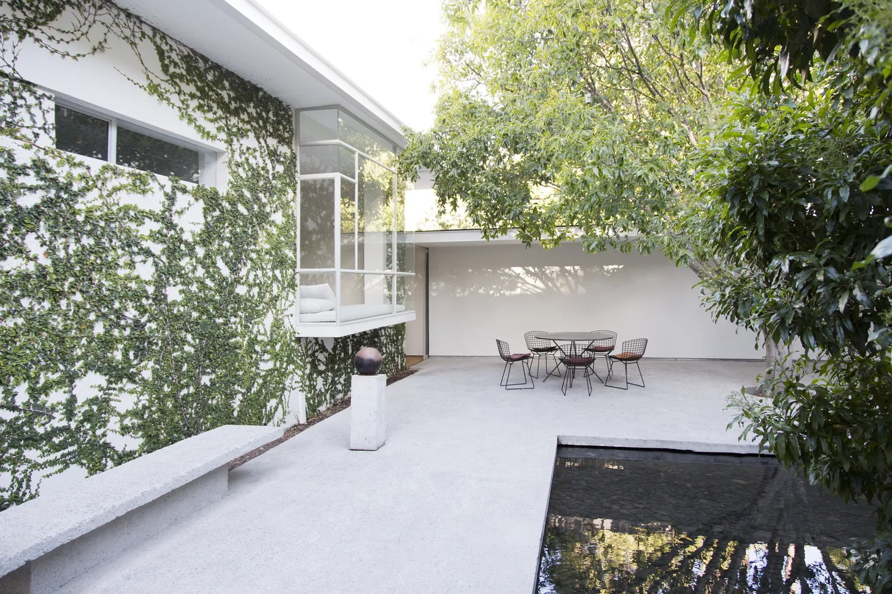

No surprises. Here's exactly how a Bespoke build runs, and where you'll hear from us along the way.
A pool is a real build, with real stages. We keep you in the loop at each one, so it always feels handled from the first meeting to the first swim.
We meet, look at your block, and design a pool and backyard to suit it. You get a clear quote with no mystery line items.
We lock in the plan, then our engineers work out the structure for your soil and slope.
We handle approvals and certification for you. No deciphering council forms on your own.
Excavation and the steel-reinforced shell. This is where it starts to feel real.
We pour and then let it cure properly, around four to six weeks. Worth the wait for a shell that lasts. (Chasing something faster? A plunge pool skips this.)
Lining, tiling, coping and waterline finishes, the details that make it yours.
Compliant fencing, decking, paving, gardens and lighting. The whole space, finished.
We walk you through your new pool, how to look after it, and who to call if you'd rather someone else did.